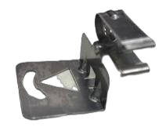

Work / Quality Engineering & Failure Analysis
Bracket misalignment at assembly
A pilot dishwasher build hit a no-build condition when a bracket that retains a critical component arrived deformed. I supported the investigation with scan-to-CAD inspection data and tolerance stack-up studies.
- Organization
- GE Appliances, a Haier Company
- Role
- Mechanical Engineering Intern, Quality
- Dates
- July 2026
- Status
- Complete
- Category
- Quality Engineering & Failure Analysis
Key results
3% → 0.5%
Assembly failure rate after drawing revisions
Reported
≈ $150K
Approximate savings attributed to the resulting improvement
Reported
15 parts
Random sample scanned to evaluate shipping behavior
- Reported
- Workplace or lab figure as stated on my resume or portfolio.
Problem and constraints
A pilot dishwasher build encountered an assembly error: a deformed bracket retaining a critical component created a no-build condition. The objective was to identify the root cause and contributing factors, and to prevent the failure from recurring.


Approach
In an assembly like this, each part's dimensional variation stacks with that of its mating parts. A scan-to-CAD comparison shows where real parts depart from nominal geometry, and a tolerance stack-up shows how much of that departure the assembly can absorb before a part no longer seats.
- Took a random sample of 15 parts to evaluate shipping behavior.
- Used PolyWorks 3D scan-to-CAD analysis to compare the physical parts against nominal CAD, using datums, surface profile, perpendicularity, and concentricity.
- Ran dimensional analysis and tolerance stack-up studies on the affected assembly and the surrounding components.
Verification
Scans at the initial condition and at resolution were checked against the same drawing callout: a surface profile of 0.035 to datums A, B and C. The initial scan shows the bracket outside that tolerance and tilted away from its nominal 90 degree angle; the resolution scan is within it.


Results
- Presented the scan and tolerance data in a simplified engineering review to communicate the failure mechanism and root cause.
- The findings supported drawing revisions that reduced assembly failures from 3% to 0.5%, contributing to approximately $150K in savings.
- The work also supported broader hardware evaluation, qualification testing, and engineering validation for cost, quality, and product performance improvements.
Tools and methods
- PolyWorks 3D scan-to-CAD
- GD&T: datums, surface profile, perpendicularity, concentricity
- Tolerance stack-up analysis
Figures and numbers are as presented in my reviewed and approved portfolio catalog. Savings are approximate and reported, not independently audited.